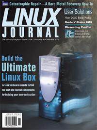

Shutdown Archive web server
Search:
Linux Journal
Issue #79/November 2000

Features
Focus: Hardware
by Don Marti
Building the Ultimate Linux Workstation
by Don Marti
Here's how to make a responsive system with high-performance 3-D, fast disk, lush sound and the things to keep it trouble-free.
AMD's Duron Processor
by Don Marti
A $70 CPU may be all that you need. We take a first look at AMD's Duron, an excellent choice for midrange desktop Linux machines.
The Return of the Revenge of the Killer $800 Linux Box
by Jason Schumaker
Can't afford Don Marti's “Ultimate” Linux box? Well, read on...Jason outlines options for the economically challenged.
Indepth
Readers' Choice Awards
by Heather Mead
Enough about us already; what do you think?
Penguin Playoff Follow-Up
by Doc Searls
Athletic flightless waterfowl? No, just the skinny on the Comdex exhibitor awards ceremony.
LTOOLS
by Dr. Werner Zimmermann
If you work with multiple platforms, LTOOLS may offer a way to make your life a whole lot easier.
A Web-Based Lunch Ordering System
by Cheng-Chai Ang
The author demonstrates how easy it is to write in Python—and make sure you get steamed, not fried rice.
Bare Metal Restore
by Charles Curley
Most of us don't take the time to place for disaster recovery. This article gives you the step-by-step.
Software ICs
by Robert D. Findlay
“Complexity must be grown from simple systems that already work.”
GNU Queue
by W. G. Krebs
Farm those jobs out with Gnu Queue!
Customize Linux from the Bottom
by He Zhu
Can't find a system that has everything you want? Build your own.
Linux as a Work Environment Desktop
by Mark Stacey
Tips and suggestions for using Linux on the desktop in a non-Linux workplace.
Linux and Networking: The Next Revolution
by Marcio Saito
Recent changes in the areas of both software and hardware are combining to revolutionize networking.
Dissecting the CueCat
by Michael Guslick
Getting inside the CueCat.
A Conversation with Red Hat's Michael Tiemann
by Dan Wilder
How embedded systems have become a part of Red Hat's operations.
It's Mod. It's Layout. Any Questions?
by Brian Aker
Web composition solutions provided by ModLayout.
Real Hard Time
by Doc Searls
MontaVista's announcement was not met with universal approval.
Toolbox
At the Forge
Using PostgreSQL
by Reuven M. Lerner
Cooking with Linux
Aging Systems for Flavour
by Marcel Gagné
Linux Apprentice Where to Install My Products on Linux
by George Kraft IV
Columns
Linley on Linux Seeking Set-Top Nirvana
Focus on Software
by Linley Gwennap
Embedded Systems News
by Rick Lehrbaum
The Last Word
by Stan Kelly-Bootle
Linux for Suits
Let Freedom Ping
by Doc Searls
Reviews
MySQLGUI—The MySQL Graphical Client
by Bill W. Cunningham
Linux System Security
by Ibrahim Haddad
SAMBA Black Book
by Daniel Lazenby
GNOME/GTK+ Programming
by Ben Crowder
Departments
Letters
upFRONT
Jason's Tips
by Jason Schumaker
From the Publisher
Announcement
by Phil Hughes
Best of Technical Support
New Products
Archive Index
Shutdown Archive web server
Search:
Copyright © 1994 - 2018
Linux Journal
. All rights reserved.